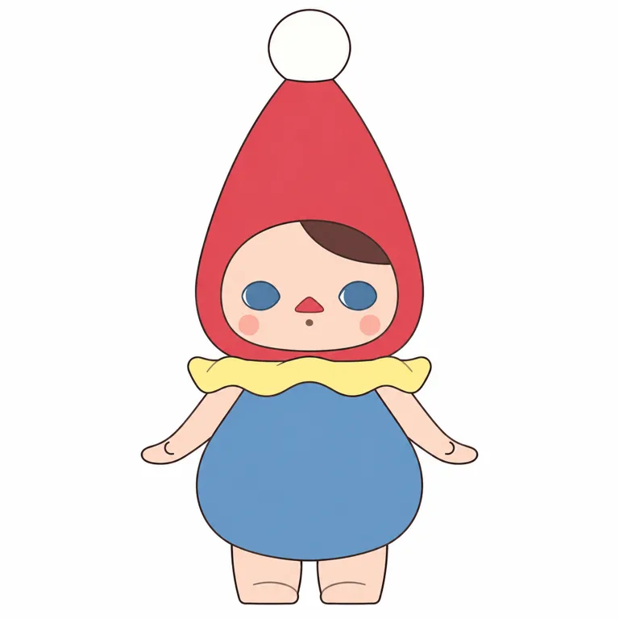

内核
官方天真幻想世界与作者明暗/神秘动机并存；二者不能混成每款均暗黑
POP MART / STANDARD STUDY / 2026.10.28
日常之外， 还有小精灵的宇宙。
香港艺术家Pucky（毕奇）
从作者原点，到角色与产品机制。
9组官方视觉 · 8项代表商品 · 17项来源
小红书按用户要求暂跳过 / 用户需求保留待验证
本轮为部分研究，已核与未知分别记录

共用脸部语言，容纳不同精灵； 从幻想到日常产品，扩展场景也保留增长边界。
角色设定、创作者自述与研究归纳分开。
用圆眼、三角鼻和幼态脸连接不同星球精灵，以世界观容纳食物、动物、居家与情绪系列。历史授权及收入已核，当前增长与用户感受仍未知；9组官方视觉、8项商品与1次附图平面实测。
给日常的疲惫，留一小片有魔法的空地。
本句为研究归纳（inferred），不是官方广告语或全体用户的心声。
天真、奇幻、神秘。在不同星球和日常情境中化身不同小精灵。
官方日本站以不同星球的精灵解释角色群：有戴高帽的星球，也有毛绒熊的星球。当前红尖帽主图只是本轮可见视角实测对象，不足以定义全部PUCKY。 [P01] [P16]
创作、首次公开、签约与首品，不合并成一个诞生日。
作者经历绘画与独立艺术玩具创作；Pucky笔名取自Puck。最早角色公开与最早独立商品日期未核；2017为许可节点，2018年4月是首套合作盲盒Pool Babies，不是角色诞生。 [P03] [P04] [P05] [P06]
| 时间 | 核实的事件 | 证据 |
|---|---|---|
| 2008 | 艺术家自述毕业于Emily Carr，随后在绘画与艺术玩具间探索 | self_report [P04] |
| 2017 | 与泡泡玛特订立独家许可协议 | fact [P06] |
| 2018-04 | 首套合作盲盒PUCKY Pool Babies推出 | fact [P06] |
| 2018 | 公司披露北京、杭州主题展；圣诞系列双11限量销售为历史公司自述 | self_report [P06] |
| 2019 | 全年PUCKY归类收入315.318百万元人民币 | fact [P06] |
| 2022 | 按IP收入119.130百万元，较2021的182.245百万元下降约34.6% | fact [P07] |
| 2024 | 食物手办/数据线、猫主题搪胶毛绒等不同载体并存 | self_report [P10] [P13] [P15] |
| 2026 | Tap Tap Babies与Closed for Today挂件上新；不能单凭上新证明增长 | self_report [P08] [P09] |
招股书还记载2018年在北京、杭州举办主题展，并称限量圣诞系列5000 units一分钟售罄。这是公司历史销售自述，有出处但缺少独立订单复核；原文units不自动改写为5000整盒，也不当作2026爆款证据。 [P06]
世界观与作者意图不能直接替代用户感受。
艺术家介绍谈到绘画、艺术玩具与明暗对照；直接访谈里也谈到可爱与神秘恐怖的并存。官方商品世界观则强调天真、魔法与不同星球。作者创作动机与具体系列设定分别成立，不能因此把每个商品都写成暗黑疗愈。 [P01] [P04] [P05]
居家、食物、市集、飞行与今日休息，把抽象幻想放进容易识别的情境。这里的内容主要由系列标题、姿态、道具和商品画面承载；本轮未连续采样账号发布，无法给出内容频率或爆款转化率。 [P08] [P11] [P12] [P13] [P14]
官方天真幻想世界与作者明暗/神秘动机并存；二者不能混成每款均暗黑
婴儿脸、尖帽、腮红、动物与食物是公共语言；身份来自具体组合与长期系列，不能单凭公共元素判抄袭
先下载并实际看图；不以生成图补作官方证据。


官方原作品通过原站图链引用；图链失效时可打开出处。当前主图不自动等于最早角色原稿。所有图像观察仅针对已看样本，无用户识别率或官方技术图结论。
固定什么、变化什么；判断均保留样本范围。
| 维度 | 本轮观察 |
|---|---|
| 原型／轮廓 | 怪兽精灵 / 大头小身 / 角色群 |
| 标记位置与记忆点 | 五官、头型：圆眼／水滴感眼形、中央三角鼻、幼态脸与精灵外壳组合；尖帽只是局部款式 |
| 五官 | V01宽眼距蓝色实心眼、内侧白月牙、红三角鼻、下方点状小嘴、圆腮红、单侧棕发；其他款眼色/发色会变 |
| 反常点与情绪 | 近似婴儿的脸被神秘或日常物件外壳包住，既熟悉又非现实儿童；研究解释 / 内收 |
| 密度与名称 | 中等 / 其他 |
幼态脸与三角鼻组织身份，精灵外壳容纳不同情境；并非所有款都有尖帽
样本中重复较多的是圆润幼态脸、宽眼距和三角鼻；鼻下还有独立的小嘴，不能把三角形误判为嘟嘴。棕眼、黑眼、猫耳和横向飞行动作说明：蓝眼、红尖帽与正立姿态都不是绝对不变量。 [P01] [P09] [P10] [P13] [P14]
记录渲染，不冒充生产色卡。
V01红帽、黄领、蓝身；食物、猫与居家系列各自组织色彩
蓝眼/红鼻是V01锚点，不是全系统一色；V03棕眼、V04多眼色、V07黑眼为反例
八区实际屏幕取样仅对应V01当前渲染，不是官方色号或生产标准。
本地V01转RGBA；左上为坐标原点，每个中心9×9逐通道中位数。阴影、高光、压缩与显示均会影响色值；未测面积配比，也没有校色或实物色差验证。
价格、地区、材料、尺寸与发售日期分别记录。
| 商品 | 当日地区标价／发售记录 | 规格／材料／边界 |
|---|---|---|
| Closed for Today 搪胶毛绒挂件 [P08] [P02] | USD 26.99 US / 2026-08-27 | 挂钩6.9cm；挂件主体10.6cm 聚酯／PVC／ABS／电子元件；填充聚酯 挂钩与主体尺寸分开；电子元件不能单独证明声音、续航或疗效。 |
| Tap Tap Babies 搪胶毛绒挂件 [P09] [P02] | USD 26.99 US / 2026-01-15 | 9–11cm 聚酯／PVC／ABS／电子元件；填充聚酯 仅核实规格与互动命名，未实测敲击音、音量、续航或情绪效果。 |
| Roly-Poly Kitty 搪胶毛绒 [P10] [P02] | USD 26.99 US / 2024-09-13 | 12cm 外层：53%聚酯／27%PVC／20%ABS；填充：90%聚酯／10%铁 官方百分比是材料构成，不是成本占比，也未说明铁件位置。 |
| Home Time 手办 [P11] [P02] | USD 15.99 US / 2023-12-22 | 2.36–3.66英寸 ABS／PVC／电池／五金 整盒9盒不重复；隐藏概率未核得；不把电池配置推广给所有手办。 |
| Fairies’ Market 手办 [P12] [P02] | USD 19.99 US / 2025-12-11 | 5–9cm PVC／ABS／五金／聚酯纤维 小尺寸手办含纺织材料，不应一律描述成纯PVC。 |
| The Feast 手办 [P13] [P02] | USD 19.99 US / 2024-05-24 | 2.7–3.7英寸 PVC／ABS 食物题材是该系列，不代表每款角色都是同一个食物原型。 |
| Flying Babies 手办 [P14] [P02] | USD 14.99 US / 2021-05-28 | 1.38–2.36英寸 ABS／PVC 整盒8盒不重复；款式与概率不能套给同名毛绒挂件。 |
| The Feast Type-C数据线盲盒 [P15] [P02] | USD 12.99 US / 2024-05-24 | 39.37英寸 硅胶／TPE／PVC 功能线材不是手办尺寸；未核得快充功率、兼容协议或耐弯折指标。 |
搪胶毛绒用织毛外壳与光滑脸形成触感反差；数据线则让角色进入功能连接件。存在多载体可以支持“场景扩展”的推断，尚不能证明它们带来新增用户、更多复购或更高利润。 [P08] [P09] [P10] [P15]
公司、IP、系列、年度与半年度分别看。
| 指标／期间 | 数值与单位 | 主体／证据 |
|---|---|---|
| PUCKY归类产品收入 2018全年 | 75.075 百万元人民币 | POP MART按IP分类收入 [P06] |
| PUCKY归类产品收入 2019全年 | 315.318 百万元人民币 | POP MART按IP分类收入 [P06] |
| PUCKY归类产品收入 2019上半年 | 70.532 百万元人民币 | POP MART按IP分类收入 [P06] |
| PUCKY归类产品收入 2020上半年 | 119.134 百万元人民币 | POP MART按IP分类收入 [P06] |
| PUCKY归类产品收入 2021全年 | 182.245 百万元人民币 | POP MART按IP分类收入 [P07] |
| PUCKY归类产品收入 2022全年 | 119.13 百万元人民币 | POP MART按IP分类收入 [P07] |
2022全年119.130百万元，对比2021全年182.245百万元，同口径下降约34.63%。2019与2018的增长是更早阶段，不能跨过中间年份画成持续上升曲线；半年只与同为半年的数据比较。 [P06] [P07]
2025年报未单列PUCKY收入，因此当前规模、2026上新效果与复苏程度均未知。Tap Tap Babies与Closed for Today的商品存在，不等于销量或用户需求已被验证。 [P08] [P09] [P17]
财报按IP归类收入不等于作者收入、授权费、零售GMV或二手市场规模。材料百分比不等于成本配比；未披露团队、毛利和库存不作估算。
本批遵照用户要求先跳过小红书；不编造评论与人群比例。
| 维度 | 证据与假设 |
|---|---|
| 人群入口 | 艺术玩具、精灵系列、手办与毛绒挂件是产品入口；具体用户结构未知 |
| 接触地点 | 艺术家网站及泡泡玛特官方线上/线下渠道；本批按用户要求跳过小红书 |
| 购买证据 | 历史IP收入可证明公司商品收入；没有订单队列或个人复购样本 |
| 识别线索 | Pool Babies、Home Time、The Feast、Roly-Poly Kitty、Tap Tap Babies为系列识别线索 |
| 分享行为 | 开箱/陈列/携带是待观察行为，未假装采集UGC |
| 破圈 | 功能线材与挂件扩大使用场景的可能性；没有归因数据 |
可爱与熟悉日常题材可能形成第一眼入口（待用户验证）
不同星球/系列、早期独立艺术与限量历史可形成收藏知识；未取得持有人行为样本
已核历史分IP商品收入；没有当前销量、粉丝增长、点赞统计或个人复购实证，不能替代。
今天的审美不能直接反推早期成功。
通勤、居家、书桌与随身携带的日常间隙；想保留童真和幻想，也不总是想表现得甜美快乐
让我有一小会儿不必回应所有事情。
外表软萌而创作动机含神秘与明暗；商品系列并非全部暗黑。
可以与单纯甜美幻想作审美比较，但未做2017同期市场普查，不能写成当时唯一稀缺。
2017许可、2018合作盲盒与线下主题展，使艺术家作品进入平台的产品与渠道体系。收入增长可能同时受系列数量、供给、门店与营销影响；本轮没有可控对照，不能把成功全部归给脸部设计或所谓某代年轻人共同焦虑。 [P06]
候选机制不冒充因果证明。
| 候选机制 | 局部支持 | 边界与替代解释 |
|---|---|---|
| 用共同脸部语言组织多精灵、多主题，而不是只重复一套服装 inference | 官方描述不同星球精灵；9组视觉中圆眼、三角鼻反复出现，外壳随猫、食物、飞行与居家变化。 [P01] [P08] [P10] [P11] [P13] [P14] | 眼色、头型和比例不是永远不变；没有做去色匿名识别实验。 |
| 把抽象幻想落在熟悉日常物上，降低理解主题的门槛 hypothesis | 居家、食物、猫与疲惫命名均有官方商品；作者表达可爱与神秘并存。 [P05] [P08] [P10] [P11] [P13] | 这是设计机制候选，没有UGC访谈证明用户购买动机，也没有与抽象系列销量对照。 |
| 从桌面陈列扩到随身携带及功能周边，扩大接触场景 inference | 手办、毛绒挂件、搪胶毛绒与Type-C数据线实际存在。 [P08] [P09] [P10] [P14] [P15] | 存在不等于真实使用频次或增量收入；各品类毛利、耐用性和用户重合未知。 |
| 渠道合作放大早期商业规模，但并不保证长期单向增长 inference | 2017许可、2018首套合作盲盒、2018/2019收入增长；2021到2022收入回落。 [P06] [P07] | 供给、门店、价格和系列数量同时变化，不能把收入起落全部归给角色设计或一次限量发售。 |
测试输入、依赖与观察完整保留。
红锥帽白球、单侧棕发、蓝眼白内月牙、三角鼻及点嘴、黄领蓝身、外展手与短腿接近；腮红更强、手脚线条简化，仍留浅渐变。通过当前可见视角的附图平面转译目视检查，不是纯文字复现通过。
研究重建词，不是创作者原词。参考图SHA256与真实输出路径见测试档案。
Use the attached official reference as the sole identity, clothing, proportions and pose reference. Translate the exact visible character from the supplied 3D promotional rendering into one clean flat 2D full-body illustration on a white square canvas. Preserve the very tall tapered red cone hood with a large white round pom-pom touching its top, and the rounded pale peach baby face framed by the red hood. Preserve the single smooth dark-brown side-swept hair patch on the viewer's right, the wide-set dark dusty-blue droplet-shaped eyes without separate black pupils and with tiny white inner-edge crescents, the central small red triangular nose, the tiny round mouth below it, and two soft circular pink cheek spots. Keep the pale yellow wide wavy ruff collar, the large rounded pear-shaped dusty-blue sleeveless torso, bare chubby arms extending downward and outward with tiny upturned hands, and two very short bare legs with flat little feet. Keep the exact front-facing standing pose, the width relationships, and the amount of forehead and cheek space shown in the reference. Draw thin clean dark outlines and solid flat local color regions. Remove all cast shadows, material shine, dimensional shading, fabric texture and photographic background. Do not add a clown smile, black pupils, eyebrows, extra hair, a second pom-pom, shoes, props or written text. No logos, no watermark. Reconstruct only this visible view; do not invent side or rear structure.下载原词 ↓
无数值相似度、多人盲测或重复稳定性结论。未经测试的原创黑白、平面、实物六条词不进入可执行正式区；研究复现不等于原创身份开发。
沿用既有study v0.3，不升级skill。
可借幻想与日常疲惫之间的张力；先找具体情境，不把官方魔法设定写成用户疗愈结果。
可借共同脸部语言与多精灵主题外壳的分工；重建自己的原型、眼鼻关系和轮廓，避免搬用本IP脸部组合。
按陈列、随身携带和功能用品分别定义结构与可靠性；材料按SKU核，电子元件、填充铁不推断为具体功能或成本。
截止2026-10-28（北京时间）；访问程度与结论边界逐项列出。
POP MART日本站 · 发布：未知 · 访问：full
支持圆眼、三角鼻与不同星球精灵；魔法消除不快是角色设定，不是疗效或用户实证。
POP MART美国站 · 发布：未知 · 访问：full
记录当日单件/单抽美元标价，不是畅销排名、销量或中国售价。
艺术家Pucky · 发布：未知 · 访问：full
可读页面仍列2020年9月1日Lucky Bag与Pluto销售；仅历史独立创作/销售线索，不作为2026活动。
香港品牌玩具协会／艺术家简介 · 发布：未知 · 访问：full
支持香港/加拿大成长、Emily Carr学习及2008毕业、艺术与玩具经历和明暗创作动机；为艺术家自述。
站酷／艺术家访谈 · 发布：未知 · 访问：partial
笔名源于Puck、可爱与神秘恐怖并存等为作者自述；确切发布日期未核实；销量转述优先回溯招股书。
POP MART／招股书 · 发布：未知 · 访问：full
已下载原PDF并提取全文，印刷页228及收入表；2017独家许可、2018年4月Pool Babies，属于历史披露，不代表2026合同未变。
POP MART／年度报告 · 发布：2023-04-21 · 访问：full
下载原PDF并核对2022及2021按IP收入表，单位人民币千元；不以2022结果推断2026收入。
POP MART美国站 · 发布：未知 · 访问：full
挂钩与主体尺寸分开；电子元件不能单独证明声音、续航或疗效。 日期为对应站点商品页发售记录，不冒充全球首发。
POP MART美国站 · 发布：未知 · 访问：full
仅核实规格与互动命名，未实测敲击音、音量、续航或情绪效果。 日期为对应站点商品页发售记录，不冒充全球首发。
POP MART美国站 · 发布：未知 · 访问：full
官方百分比是材料构成，不是成本占比，也未说明铁件位置。 日期为对应站点商品页发售记录，不冒充全球首发。
POP MART美国站 · 发布：未知 · 访问：full
整盒9盒不重复；隐藏概率未核得；不把电池配置推广给所有手办。 日期为对应站点商品页发售记录，不冒充全球首发。
POP MART美国站 · 发布：未知 · 访问：full
小尺寸手办含纺织材料，不应一律描述成纯PVC。 日期为对应站点商品页发售记录，不冒充全球首发。
POP MART美国站 · 发布：未知 · 访问：full
食物题材是该系列，不代表每款角色都是同一个食物原型。 日期为对应站点商品页发售记录，不冒充全球首发。
POP MART美国站 · 发布：未知 · 访问：full
整盒8盒不重复；款式与概率不能套给同名毛绒挂件。 日期为对应站点商品页发售记录，不冒充全球首发。
POP MART美国站 · 发布：未知 · 访问：full
功能线材不是手办尺寸；未核得快充功率、兼容协议或耐弯折指标。 日期为对应站点商品页发售记录，不冒充全球首发。
POP MART英国站 · 发布：未知 · 访问：full
本轮V01当前宣传渲染图来源；图像创作/首次发表日期未知，不能当作2017原始图。
POP MART／港交所 · 发布：2026-04-21 · 访问：full
已读分IP收入表，未单列PUCKY；其他艺术家IP总额不能分配给PUCKY。